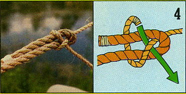

Headin' back to the land (or making any move toward greater self-sufficiency) will, sooner or later, mean a return to the use of ropes. Without simple hitches (single ropes tied to objects) and bends (ropes joined together), loads fall off trucks, an expensive cow or goat escapes, a boat goes adrift, and hoisting hay from wagon to mow becomes a major problem.
However, before you start to learn down-home knotsmanship, a brief summary of rope vocabulary is in order.
Bitter End: The end of a rope that's being manipulated - also called the "working end."
Standing Part: the segment of the rope that you aren't using at the moment. It can be coiled, stretched, or otherwise left inactive.
Bight: a curve or are in the rope. This can be a semicircle or a loose loop through which the working end may run.
There are over 4,000 hitches and bends used in special crafts, but - with the following 10 knots in your rope repertoire - you'll be able to handle just about any situation that requires you to fasten two objects together, secure one line to another, or tie a rope to a solid object.
As we go along, take a look at the numbered photos and diagrams, and practice with ropes of your own until your memory has mastered these often essential knots.
1. Overhand Knot: This one is easy, just bitter end over and under the bight. The overhand is used as a temporary stopper to prevent a rope from unraveling or passing through a ring, eye, or pulley. It's also We starting point for other knots, including the reefor square-knot.
2 Figure-Eight Knot: The figure eight is a better stopper knot than the overhand, because it's easier to untie after the rope has been pulled tight. Just form a bight with the working end over the standing part ... run the bitter end under the standing part to form a second bight, then put the bitter end through the first bight. The result looks like a sideways numeral 8.
3. Square (Reef) Knot: Use this one to lash two objects together with one line, or to join two separate ropes. But take care - the reef knot will often slip under strain, f the two ropes knotted together are of different diameters.
Actually, the square knot is simply two overhand knots-one on top of the other-with the second tied in the opposite direction from the first. When the knot is formed, the bitter ends and standing parts of each line will lie together inside the two bights. (CAUTION: A granny knot looks a bit like a reef knot, but the bitter ends will be on opposite sides of the bights from the standing parts. Beware of the granny ... she's slippery and can't take a load.)
4. Sheet (Becket) Bend: You should use this knot to join two ropes of different diameters, It's much stronger and less slip-prone than the square knot, but can be easily untied no matter how wet and tight it may be. Just form a bight (big enough to work with) in the larger of the two lines. Run the working end of the smaller line through the loop, around the doubled heavier cord, back over as own standing part, then under the bight in the larger line. Always snug the sheet bend up by hand before you put any strain on it.
5. Carrick Bend: This knot is less well known than the reef or sheet bend, but it's stronger than either of them and just as easy to loosen, even after a sustained, hard pull. To tie it, just form a loop in one rope, with the working end crossing under the standing end. Then, pass the bitter end of the other cord beneath this bight, over the first rope's standing end, down under its working end, over one side of the loop, under its own (the second rope's) standing end, and - finally - over the second side of the loop. The carrick bend will require a good bit of practice before it becomes natural to you. However, if a "Best Bend" award existed, this tricky knot would be sure to walk off with the trophy.
6. Bowline: The purpose of the bowline is to form a secure loop in the end of a line. It can be tied swiftly and is easily loosened, even when it's under strain. Simply form a closed bight in the rope (leaving an ample working end, which will form the loop), bring the bitter end up through the bight, around the standing end, back down through the bight again, and pull the knot tight. One slight caution: The good ol' bowline - which holds with fair reliability in natural fiber ropes - may slip when tied with some slick-surfaced synthetic lines.
7. Clove Hitch: This hitch won't be secure unless there's a load acting on both ends of the knot, and should only be considered as a general utility hitch for temporary use. To make it, roll a bight around a pole, pipe, or post and then across the standing part. Next, make a second turn around the pole and pass the bitter end under the last bight. You can tie a clove hitch before you need it - so the hoop can be passed over a post, or the knot can be put in with a loop-the-loop operation (as over your pickup truck's cargo-tiedown hooks) while tension is held on the standing part of the rope. It's a so-called "jam" knot, because the harder the strain it takes, the tighter the knot becomes, yet it can be slipped the second the stress is removed.
8. Timber Hitch: This knot is designed to roll around a tree to hold a temporary guy, to drag or winch a log, or to lift timber with a boom hoist. Just loop the bitter end of the rope around a tree, timber, or log, then turn it around the standing part, and twist it back along the bight for as few as two-or as many as eightturns. (The more turns, the less likely the knot is to slip under strain.)
Any pull on the standing part will tighten the timber hitch and jam the turns of the rope against the surface of whatever is being lifted, dragged, or towed. When stress on the standing part is eased, the timber hitch can easily be unwound and released.
9. Taut-Line Hitch: Here's a handy knot for folks who work or play around high places (see ''Go Climb a Tree!"). The taut-line hitch will slide up and down to provide a climber with freedom of movement, but -s hould he or she slip -i t will tighten up and stop the fall short. This hitch is also the one used to securely tie a tarp to a stake.
Start this knot by throwing a rope over a branch (or whatever) so that two lines hang parallel to each other. The longer end-which extends down to the ground - is called (appropriately) a ground line. The other end of the rope should be looped (twice) through a ring in a special climber's belt, leaving a working end of about two feet in length.
Take this 24-inch tail and pass its working end around the ground line in a clockwise direction to form two complete tight loops, the second below the first. Then, form two more clockwise loops (also around the ground line) but at a point above the first two and with the difference that-each time the leading end is brought around the ground line to complete these coils - it must pass under its own bight. Hence, the complete knot includes four tight loops, side-by-side, around the ground line, and resembles four doughnuts on a stick.
Counting from the top downward, the loops of a correct hitch are tied in this order: 3, 4, 1, 2 ... that is, the top was the third to be tied, the second from the top was the last to be tied, etc.
In the complete knot, the leading end should remain sticking out 10 inches or so and should have a figure-eight knot tied to its end to prevent it from accidentally slipping through the loop of the taut-line hitch, should that knot ever become loose.
10. Sheepshank: This is a special-purpose knot that's useful when you have too much rope to conveniently handle a specific job but don't want to cut your valuable line.
To make the sheepshank, lay two long bights (in the standing part) side-by-side like a wide letter S, then secure both loops with half hitches. This knot can also be used to bypass an area in a rope that's been weakened by excessive chafing. You can just shake the knot loose when the strain is released.
There are any number of other knots you'll find just as useful as our "10 best," so don't stop once you've mastered these few starters. You can, for example, get into such colorful specialties as the fisherman's bend, cow hitch, surgeon's knot, wagoner's hitch, packer's knot, man-harness knot, fireman's-chair knot, scaffold hitch, barrel knot, and the boatswain's hitch.
So, get yourself a hunk of rope ... and knots to you!
Also check out The Forgotten Zeppelin Knot.
|
Overhand Knot. To see the other nine knots, click on Image Gallery above. |
Figure Eight Knot |
Square (Reef) Knot |
|
 Sheet (Becket) Bend |
Carrick Bend |
Bowline |
|
Clove Hitch |
Timber Hitch |
Taut-Line Hitch |
|
Sheepshank |
|
|